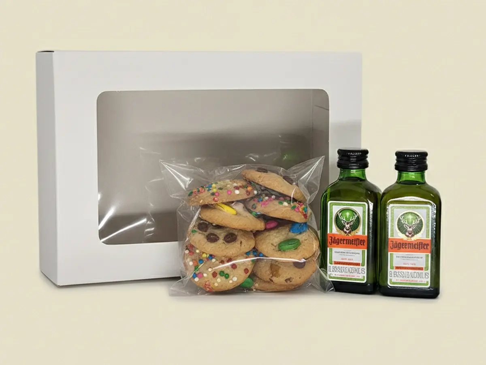

5 Regalos Originales en Cali para Sorprender a tu Persona Favorita
Cali es una ciudad vibrante llena de opciones, pero a la hora de dar un regalo, a veces caemos en lo mismo de siempre: ropa, bonos o perfumes. Si quieres destacar y realmente emocionar a esa persona especial, aquí te traemos 5 ideas de regalos originales en Cali.
1. Cajas de Experiencias Dulces
No es solo dar comida, es dar un momento. En MisajoCookies, hemos diseñado Combos Premium que combinan nuestras galletas artesanales más vendidas con licores seleccionados y velas aromáticas. Es el plan perfecto para una tarde de lluvia o una celebración íntima.
2. Clases de Salsa Privadas
Estamos en la capital mundial de la salsa. Regalar una clase privada para pareja o individual es una experiencia que conecta con la cultura de la ciudad y garantiza risas y movimiento.
3. Picnics en Ciudad Jardín o Pance
El sur de Cali ofrece espacios verdes increíbles. Organiza un picnic sorpresa. ¿El toque secreto? Lleva de postre unos Alfajores de Arequipe de MisajoCookies. Sueves, dulces y perfectos para compartir al aire libre.
4. Artesanías de San Antonio
Apoya el talento local regalando una pieza única del barrio San Antonio. Combina esto con una caja de nuestras Galletas Bigote para ponerle un toque divertido y moderno al regalo.
5. Desayunos Sorpresa Personalizados
Inicia el día de esa persona con el pie derecho. Incluye productos frescos y artesanales. Nuestras galletas son el complemento ideal para el café de la mañana, aportando ese sabor casero que las marcas industriales no pueden igualar.